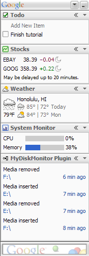

| Google Desktop Sidebar Plug-In Wizard Tutorial |
For Users
Download Plug-ins
Desktop Search Forum
For Developers
Plug-in Development
Download SDK
Developer Guide
Index API
Query API
Display API
Script API
Communication API
Plug-in Design Guidelines
Plug-in Tutorials
Using Wizard
Using Helper Framework
Using ActiveX
Action API
Event API
Plug-in Installer
Submit Software
Developer Forum
Desktop Blog
- Introduction
- Creating the Project in Visual Studio
- Customizing Generated Wizard Code For This Tutorial
- Adding Items To The Plug-in Tile
- Responding to Double Clicks on Tile Items
- Responding to Single Clicks on Tile Items
IntroductionThis is a tutorial on how to create a DLL Google Desktop Sidebar plug-in using the helper framework and the wizard for Visual Studio 2003. This framework and wizard are both provided as part of the Google Desktop Developer SDK. The wizard significantly eases and speeds up plug-in development by generating a minimal template for your plug-in which you can easily modify for your specific needs. Note that this is not an API reference, but rather step-by-step instructions for creating a helper framework based plug-in using the wizard. Before reading this, you should be familiar with the Google Desktop SDK/API concepts and interfaces described here. In particular, this tutorial shows how to create a basic plug-in that creates a Sidebar tile that monitors your disk drives and alerts you whenever you insert or remove any removable storage media. The overall name of our example is MyDiskMonitor, and we indicate example code that you will need to change for your own plug-ins by coloring it red. A Sidebar including the MyDiskMonitor tile is shown to the right. |
 |
Creating the Project in Visual Studio
To start with, you need to create your project in Visual Studio, name it, and set a couple of its properties. This results in a basic project template that you'll modify in the following tutorial sections.
- Start Visual Studio .NET 2003.
- Go to the File menu and select New, Project...
- From the Project Types list, select Visual C++ Projects and then Google.
- Select Google Desktop Display Plugin Wizard.
- Enter a name for your plug-in in the textbox. For our example, we use the name MyDiskMonitor. Click OK.
- The Google Desktop Display Plug-in Wizard will ask you for settings. Start by typing in a description for your plug-in. For our example, enter "Monitors removable drives and alerts you when a storage device is inserted or removed.".
- Beside Initial number of items, enter 0. Setting this to a value other than 0 will create dummy sample items (simply titled "Item") which aren't of use for this tutorial.
- Set Number of property pages to 0, since these aren't used in our example. A property page is an options panel in which the user can set settings for your plug-in. Property pages will not be covered in this tutorial.
- Click the Finish button. The Google Desktop Display Plugin Wizard automatically creates your project and implements the proper libraries.
Customizing Generated Wizard Code For This Tutorial
The wizard's sample code automatically creates a new tile item every few seconds. Since our example only adds items when they occur on the system at non-fixed times (and at what's likely to be considerably less often than every few seconds), we need to remove this code.
- Open plugin.h, the
plug-in object's header file.
- Go to message-only window class CMyDiskMonitorPluginMsgOnlyWindow and its MESSAGE_HANDLER block and remove its WM_TIMER line.
- Remove the OnTimer method prototype. The section
should now look like:
// message map BEGIN_MSG_MAP(CMyDiskMonitorPluginMsgOnlyWindow) END_MSG_MAP() private: CMyDiskMonitorPlugin *m_plugin; }; - In the main plug-in class CMyDiskMonitorPlugin, remove the ChangeItems prototype.
- Open plugin.cpp, the plug-in object's cpp file.
- From the message-only class
CMyDiskMonitorPluginMsgOnlyWindow's
Init() method, remove the line:
SetTimer(kItemUpdateTimerId, kItemUpdateTimeMs, NULL); - Also in the CMyDiskMonitorPluginMsgOnlyWindow class, remove the wizard-created OnTimer method.
- In the main plug-in class CMyDiskMonitorPlugin, remove the ChangeItems() method.
- Also in the main plug-in class, in the StartDisplayingItems method remove the line ChangeItems(true);
Adding Items To The Plug-in Tile
Now that we've got the project set up and the necessary Desktop libraries imported, it's time to create the object that will be displayed in the Sidebar.
- Open plugin.h, the plug-in object's header
file. Next, we need to define some variables so that we can
receive media notifications.
- Insert the following under the #include lines at the top of the file:
#define WM_SHELLNOTIFY WM_USER+5 typedef struct { DWORD dwItem1; DWORD dwItem2; } SHNOTIFYSTRUCT; - In the message-only window message handler, insert two lines of
code, one in the middle and one at the end, so that it now looks
like:
BEGIN_MSG_MAP(CMyDiskMonitorPluginMsgOnlyWindow) MESSAGE_HANDLER(WM_SHELLNOTIFY, OnShellNotify); END_MSG_MAP() LRESULT OnShellNotify(UINT msg, WPARAM wp, LPARAM lp, BOOL& handled); - At the bottom of the message-only window class definition scope,
insert the following:
public: void UnInit(); private: CString GetPathFromPIDL(DWORD pidl); private: CMyDiskMonitorPlugin *m_plugin; int m_notification; };
- Since we want to add items of any name and source depending on
the media notification, change the
AddNewContentItem();
definition in the main plug-in class to:
void AddNewContentItem(CString item_title, CString item_source);
- Insert the following under the #include lines at the top of the file:
- Open the plug-in object's CPP file, plugin.cpp.
- Remove the CMyDiskMonitorPluginMsgOnlyWindow::Init() method.
- The following code handles windows notifications when the user
inserts or removes removable media. The type of item added depends
on the action; inserted media adds a "media inserted" item, while
removed media adds a "media removed" item. Add it to the end of the file.
bool CMyDiskMonitorPluginMsgOnlyWindow::Init(CMyDiskMonitorPlugin *plugin) { // create a message-only window if (Create(HWND_MESSAGE) == NULL) return false; m_plugin = plugin; // Specify to listen for file change events from all hard drives LPITEMIDLIST id_list; if (SHGetSpecialFolderLocation(m_hWnd, CSIDL_DESKTOP, &id_list) != NOERROR) return false; SHChangeNotifyEntry notify_settings; notify_settings.fRecursive = TRUE; notify_settings.pidl = id_list; // Start listening for file events m_notification = SHChangeNotifyRegister(m_hWnd, SHCNE_DISKEVENTS, SHCNE_MEDIAINSERTED | SHCNE_MEDIAREMOVED | SHCNE_DRIVEADD | SHCNE_DRIVEREMOVED, WM_SHELLNOTIFY, 1, ¬ify_settings); if (m_notification == 0) return false; return true; } void CMyDiskMonitorPluginMsgOnlyWindow::UnInit() { if (m_notification) SHChangeNotifyDeregister(m_notification); } LRESULT CMyDiskMonitorPluginMsgOnlyWindow::OnShellNotify(UINT msg, WPARAM wp, LPARAM lp, BOOL& handled) { SHNOTIFYSTRUCT *notification = (SHNOTIFYSTRUCT *)wp; CString strPath, strMsg; if ((lp == SHCNE_MEDIAINSERTED) || (lp == SHCNE_DRIVEADD)) { m_plugin->AddNewContentItem(L"Media inserted", GetPathFromPIDL(notification->dwItem1)); } else if ((lp == SHCNE_MEDIAREMOVED) || (lp == SHCNE_DRIVEREMOVED)) { m_plugin->AddNewContentItem(L"Media removed", GetPathFromPIDL(notification->dwItem1)); } return S_OK; } CString CMyDiskMonitorPluginMsgOnlyWindow::GetPathFromPIDL(DWORD pidl) { CString out(_T("")); wchar_t path[MAX_PATH]; if (SHGetPathFromIDList((struct _ITEMIDLIST *)pidl, path)) out = path; return out; } - Modify the FinalRelease method to:
void CMyDiskMonitorPlugin::FinalRelease() { if (m_msgOnlyWindow.IsWindow()) { m_msgOnlyWindow.UnInit(); m_msgOnlyWindow.DestroyWindow(); } m_pluginHelper.Release(); } - Modify the AddNewContentItem method to:
void CMyDiskMonitorPlugin::AddNewContentItem(CString item_title, CString item_source) { - In the AddNewContentItem method, change the
definitions of snippet, source, and heading to:
// the strings to display CComBSTR snippet(item_title); CComBSTR source(item_source); CComBSTR heading(item_title);
Responding to Double Clicks on Tile Items
We need to handle how the items in our tile respond when users double-click on them. Per the UI guidelines, double-clicking opens the item in a new application window and also selects it in the Sidebar.
- Open the plug-in object's CPP file (plugin.cpp).
- OpenItem() in the item class handles opening the
item. Customize it to handle your particular items. For our example,
replace the generated OpenItem() method with the following version:
STDMETHODIMP CMyDiskMonitorPluginContentItem::OpenItem() { CComQIPtr<IGoogleDesktopDisplayContentItemHelper> helper(m_contentItemHelper); CComBSTR drive; ATLVERIFY(SUCCEEDED(helper->get_source(&drive))); ShellExecute(NULL, _T("open"), drive, NULL, drive, SW_SHOWNORMAL); return S_OK; }
Responding to Single Clicks on Tile Items
We need to handle how the items in our tile respond when users single-click on them. Per the UI guidelines, single-clicking opens the item's details view.
- Open the plug-in object's CPP file (plugin.cpp).
- OpenItem() in the item class handles opening the
item. Customize it to handle your particular items. For our example, a
details view is put together depending on the volume information (if
it was inserted). The SetContent() method adds text to
the details view. When completed, the Detach() method makes
the data displayable on the details view window.
Replace the generated OpenItem() method with the following version:STDMETHODIMP CMyDiskMonitorPluginContentItem::OnDetailsView(BSTR* title, GoogleDesktopDisplayDetailsViewFlags* flags, IUnknown** details_control, VARIANT_BOOL* cancel) { // Get the item to be displayed CComQIPtr<IGoogleDesktopDisplayContentItemHelper> helper(m_contentItemHelper); ATLASSERT(helper != NULL); if (!helper) return E_INVALIDARG; // Here we can create any ActiveX control for displaying the details, and // return it via the details_control parameter. We use our // CMyDiskMonitorPluginDetailsView control to draw the details view content. CComPtr<IMyDiskMonitorPluginDetailsView> details; HRESULT hr = details.CoCreateInstance(CLSID_MyDiskMonitorPluginDetailsView); if (SUCCEEDED(hr)) { // Get source drive that was inserted/removed CComBSTR drivePathBSTR(""); helper->get_source(&drivePathBSTR); CString drivePath(drivePathBSTR); // Get the drive label CString driveLabel; GetVolumeInformation(drivePath, driveLabel.GetBuffer(255), 255, NULL, NULL, NULL, NULL, NULL); driveLabel.ReleaseBuffer(); // Get the drive size total and free space ULARGE_INTEGER totalSpace, freeSpace; CString totalSpaceOUT, freeSpaceOUT; GetDiskFreeSpaceEx(drivePath, NULL, &totalSpace, &freeSpace); totalSpaceOUT.Format(_T("%llu"), totalSpace); freeSpaceOUT.Format(_T("%llu"), freeSpace); // Set the text in the details view CString output; output += _T("Drive: ") + drivePath + _T("\n"); output += _T("Label: ") + driveLabel + _T("\n"); output += _T("Total size (Bytes): ") + totalSpaceOUT + _T("\n"); output += _T("Free space (Bytes): ") + freeSpaceOUT + _T("\n"); // Display the output in the details window CComBSTR outputBSTR(output); details->SetContent(outputBSTR); helper->get_source(title); // Return the data to display *details_control = details.Detach(); *flags = static_cast<GoogleDesktopDisplayDetailsViewFlags>( GDD_DETAILS_VIEW_FLAG_TOOLBAR_OPEN); } return hr; }